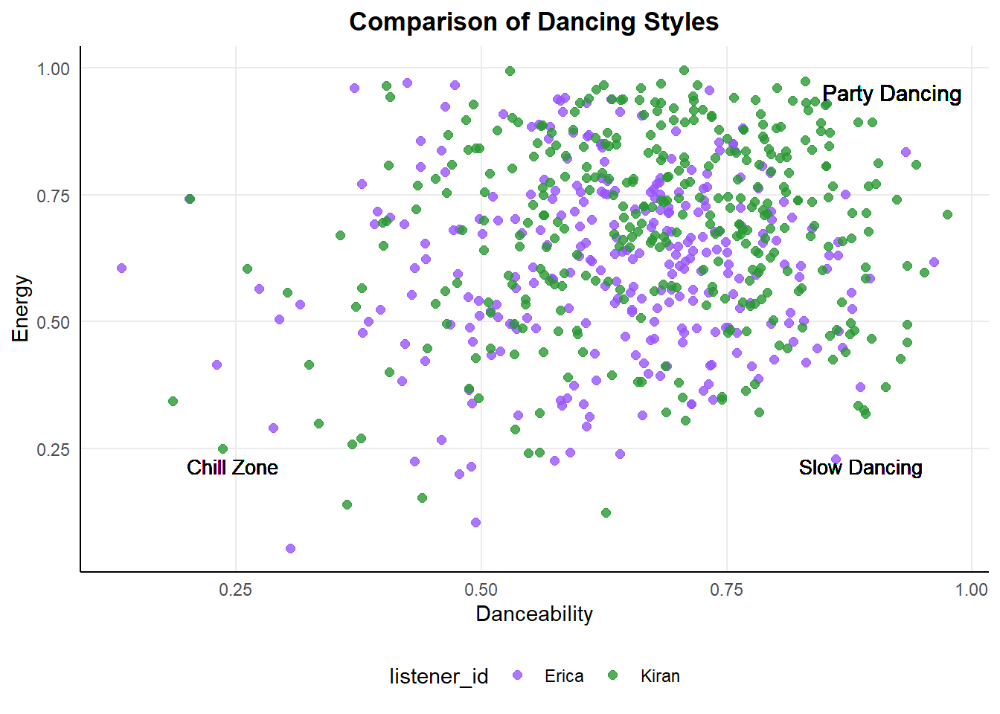

library(spotifyr) # API interaction
library(here) # Set file location
library(knitr) # Creates nice tables
library(tidyverse)
library(tidymodels)
library(readr)
library(dplyr)
library(ggplot2)
library(rpart)
library(caret)
library(rpart.plot)
library(vip)
library(pdp)
library(parsnip)
library(ipred)
library(baguette)Introduction
This fun project will use my personal Spotify music, along with my friend Kiran’s, with the goal to build several machine learning algorithms that will determine whose music library a song belongs to. I will explore 4 candidate models (k nearest neighbors, decision trees, bagging, and random forest) to predict this binary outcome. To begin, the code to access your own Spotify account is included!
Access the Spotify API
To access the Spotify API, follow the link to <a href=“https://developer.spotify.com”>Spotify for Developers and follow these instructions:
Select “Create a Client ID”
Fill out form to create an app
On dashboard page, click new app
App’s dashboard page will have Client ID
Click “Show Client Secret”
Use the below code with your client ID and Client Secret in R!
Sys.setenv(SPOTIFY_CLIENT_ID = 'your_token')
Sys.setenv(SPOTIFY_CLIENT_SECRET = 'your_token')
access_token <- get_spotify_access_token(
client_id = Sys.getenv("SPOTIFY_CLIENT_ID"),
client_secret = Sys.getenv("SPOTIFY_CLIENT_SECRET")
)I downloaded my liked songs, but the built-in function with the {spotifyr} package has a limit to download only 20 songs at a time. Below I wrote a loop to continue adding all of my liked songs into a dataframe.
songs_data <- data.frame() # create base empty data frame
offset <- 0 # starting point for spotify function offset
limit <- 20 # maximum download at a time
while(TRUE) { # loop through all liked songs
tracks <- get_my_saved_tracks(limit = limit, offset = offset)
if(length(tracks) == 0) { # setting when to stop the loop
break
}
# add tracks into previously created dataframe
songs_data <- rbind(songs_data, tracks)
offset <- offset + limit # reset the loop to start at the next 20
}There are other functions to play with inside this {spotifyr} package! I will not be exploring these further in this blog post, but some examples I’m excited to explore are here.
bearicas_recent <- get_my_recently_played()
bearicas_top <- get_my_top_artists_or_tracks()
unique(bearicas_top$genres)Exploring the data frame was not very exciting, the columns had a lot of information that did not interest me and a lot of technical columns. This data frame is mostly important to pull out the song ID column, and use that to connect back with Spotify’s API for downloading the specific audio features for each song. This function has a maximum download of 100 rows at a time so I created another loop below to download all the related audio features and bind the columns to the initial dataframe.
audio_features <- data.frame() # create base empty data frame
for(i in seq(from = 1, to = nrow(songs_data), by = 100)) {
if (i > nrow(songs_data)) { # setting when to stop the loop
break
}
row_index <- i:(i + 99) # collect 100 rows starting from i
# pull out features for set rows
audio <- get_track_audio_features(songs_data$track.id[row_index])
# add features to dataframe
audio_features <- rbind(audio_features, audio)
}
# will read in by 100, so may have NA's from the last loop
audio_features <- drop_na(audio_features)
# create data frame with songs and fun features!
ericas_audio <- cbind(audio_features,
track.name = songs_data$track.name,
track.popularity = songs_data$track.popularity) |>
select(-c(uri, track_href, analysis_url, type)) # remove rows
# save as csv to share
write_csv(ericas_audio, "ericas_audio.csv")My friend Kiran and I swapped data, which I will use to create a series of machine learning models to compare our music tastes. The goal is to create a model that can predict, using the audio features who is the listener. I would go through four different types of models and at the end compare the metrics of each to decide which was most effective! The outcome variable will be the binary option of Kiran or Erica, set as listener_id.
ericas_audio <- ericas_audio |>
mutate(listener_id = "erica")
kirans_audio <- read_csv("kiran_audio.csv") |> # get partner's data as csv
mutate(listener_id = "kiran")
# combine datasets
total_audio <- rbind(ericas_audio, kirans_audio) |>
mutate(listener_id = as.factor(listener_id))
write_csv(total_audio, "total_audio.csv")All of these previous steps culminate to this total_audio.csv file that I have previously saved and set aside, since I did not want to share my private Spotify information at the beginning.
total_audio <- read_csv(here("posts", "2023-02-22-spotify", "total_audio.csv")) |>
mutate(listener_id = as.factor(listener_id))Data Exploration!
total_audio %>%
arrange(desc(instrumentalness)) |>
select(instrumentalness, track.name, track.popularity, listener_id) |>
head(6) |>
kable()| instrumentalness | track.name | track.popularity | listener_id |
|---|---|---|---|
| 0.971 | Slow Blues - Instrumental | 38 | kiran |
| 0.946 | Orange | 42 | kiran |
| 0.935 | Ylang Ylang | 61 | kiran |
| 0.924 | Atlas | 46 | kiran |
| 0.924 | Defect | 19 | kiran |
| 0.918 | Master Tea | 0 | erica |
Surprised to find out that the top instrumental songs belonged mostly to Kiran’s playlist, I mostly listen to music with strong drums and little lyrics so expected that I’d be in the top.
total_audio %>%
arrange(desc(acousticness)) |>
select(acousticness, track.name, track.popularity, listener_id) |>
head(6) |>
kable()| acousticness | track.name | track.popularity | listener_id |
|---|---|---|---|
| 0.994 | Pachamama | 58 | erica |
| 0.979 | Flowers | 57 | erica |
| 0.978 | All We Do | 56 | erica |
| 0.973 | Whatever’s Written in Your Heart | 29 | kiran |
| 0.942 | The Forsaken Waltz | 32 | kiran |
| 0.934 | The View | 8 | erica |
Although more of the top acoustic songs belonged in my playlist, Kiran listens to much louder music than me apparently.
ggplot(total_audio, aes(x = track.popularity)) +
geom_bar(aes(fill = listener_id), alpha = .5) +
labs(title = "Who Has More Popular Music Taste")I listen to the most music listed as 0 popularity, so maybe I’m more underground and edgy with my style.
ggplot(total_audio, aes(x = danceability, y = energy)) +
geom_point(aes(color = listener_id)) +
labs(title = "Comparing Dancing Styles")
With this graph, low energy and high danceability would relate to slower (possibly romantic) songs, both of us appear to enjoy high energy and very danceable music but Kiran definitely goes harder.
Set Up Variables
I will be creating several machine learning models, and use these variables as the start for them all.
ADD EXPLANATION OF TRAIN?TEST SPLIT
Avoid leakage Train and test separted, train data not used at all to influence test Split data before preprocessing - indirect form of leakage - Preprocessing is {tidymodels} functions like step - Create recipe, part of preprocessing
one_hot method of encoding categorical variable as numerical, turns column (genre) into series of columns for each and 0/1
set.seed(14) # allows reproducibility
song_split <- initial_split(total_audio)
song_test <- testing(song_split)
song_train <- training(song_split)
# Preprocessing
song_recipe <- recipe(listener_id ~ ., data = song_train) |>
update_role(track.name, new_role = "ID") |>
update_role(id, new_role = "ID") |>
step_dummy(all_nominal(), -all_outcomes(), one_hot = TRUE) |>
step_normalize(all_numeric(), -all_outcomes()) |>
prep()
# Cross Validation to tune parameter
cv_folds <- song_train |>
vfold_cv(v = 5)K Nearest Neighbors Model
Unsure if update role above is working, getting errors
# Bake
# NEVER USE THIS AGAIN?????
knn_baked <- bake(song_recipe, song_train)
# Apply recipe to test data
# NEVER USE THIS AGAIN????
knn_test <- bake(song_recipe, song_test)
# Specify nearest neighbor model
knn_spec <- nearest_neighbor(neighbors = 7) |>
set_engine("kknn") |>
set_mode("classification")
# Workflow
knn_workflow <- workflow() |>
add_model(knn_spec) |>
add_recipe(song_recipe)
# Fit resamples
knn_res <- knn_workflow |>
fit_resamples(
resamples = cv_folds,
control = control_resamples(save_pred = TRUE))
# Check Performance
knn_res |> collect_metrics()
# Specify: Define model with tuning
# Should I just do this the first time with spec, or run it again??
knn_spec_tune <- nearest_neighbor(neighbors = tune()) |>
set_engine("kknn") |>
set_mode("classification")
# Workflow: Define new workflow
# Should I just skip the first spec/workflow??
knn_workflow_tune <- workflow() |>
add_model(knn_spec_tune) |>
add_recipe(song_recipe)
# Fit workflow on predefined folds and hyperparameters
knn_cv_fit <- knn_workflow_tune |>
tune_grid(
cv_folds,
# Select other neighbors??
grid = data.frame(neighbors = c(1, 5, seq(10, 100, 10))))
# Check performance
knn_cv_fit |> collect_metrics()
#Results will show the n averaged over all the folds. Use this to predict the bestPredict!
# Workflow: Final
knn_final_wf <- knn_workflow_tune |>
finalize_workflow(select_best(knn_cv_fit, metric = "accuracy"))
# Fit: Final
knn_final_fit <- knn_final_wf |> fit(data = song_train)
knn_final_fit <- knn_final_wf |> last_fit(song_split)
knn_metrics <- knn_final_fit |> collect_metrics()Decision Tree
# dec tree specification tuned to the optimal parameters
dec_tree_spec_tune <- decision_tree(
cost_complexity = tune(),
tree_depth = tune(),
min_n = tune()) |>
set_engine("rpart") |>
set_mode("classification")
dec_tree_grid <- grid_regular(cost_complexity(),
tree_depth(),
min_n(),
levels = 4)
doParallel::registerDoParallel() # build trees in parallel
dec_tree_rs <- tune_grid(
dec_tree_spec_tune,
listener_id ~ .,
resamples = cv_folds,
grid = dec_tree_grid,
metrics = metric_set(accuracy)
)
autoplot(dec_tree_rs) + theme_light()
dec_final_tree <- finalize_model(dec_tree_spec_tune,
select_best(dec_tree_rs))
final_dectree_fit <- last_fit(dec_final_tree,
listener_id ~ .,
song_split) # does training and testing runs
final_dectree_fit$.predictions
dtree_metrics <- final_dectree_fit |> collect_metrics()Bagging
# Tune specs
tree_spec_tune <- bag_tree(
mode = "classification",
cost_complexity = tune(),
tree_depth = tune(),
min_n = tune()) |>
set_engine("rpart", times = 50)
# Define tree grid
tree_grid <- grid_regular(cost_complexity(), tree_depth(), min_n(), levels = 5)
# New workflow
wf_tree_tune <- workflow() |>
add_recipe(song_recipe) |>
add_model(tree_spec_tune)
# Build in parallel
doParallel::registerDoParallel()
# # fit model
tree_rs <- wf_tree_tune |>
tune_grid(listener_id ~ .,
resamples = cv_folds,
grid = tree_grid,
metrics = metric_set(accuracy))
tree_rs |> collect_metrics()
final_bag <- finalize_workflow(wf_tree_tune, select_best(tree_rs, "accuracy")) |>
fit(data = song_train)
# Predictions
bag_pred <- final_bag |>
predict(new_data = song_test) |>
bind_cols(song_test)
# Output accuracy
bag_metrics <- bag_pred |>
metrics(truth = listener_id, estimate = .pred_class)
bag_metricsRandom Forest
## Defining validating set
set.seed(123)
val_set <- validation_split(song_train,
strata = listener_id,
prop = 0.70)
## Creating Random Forest specification
rf_spec <-
rand_forest(mtry = tune(),
min_n = tune(),
trees = 1000) %>%
set_engine("ranger") %>%
set_mode("classification")
## Defining Random Forest workflow
rf_workflow <- workflow() %>%
add_recipe(song_recipe) %>%
add_model(rf_spec)
## Build in parallel
doParallel::registerDoParallel()
rf_res <-
rf_workflow %>%
tune_grid(val_set,
grid = 25,
control = control_grid(save_pred = TRUE),
metrics = metric_set(accuracy))
## Output model metrics
rf_res %>% collect_metrics()
## Find the best accuracy metric
rf_res %>%
show_best(metric = "accuracy")
## Plot results
autoplot(rf_res)
## Select best Random Forest model
best_rf <- select_best(rf_res, "accuracy")
best_rf
## Output predictions
rf_res %>%
collect_predictions()
## Defining final model while working in parallel
doParallel::registerDoParallel()
last_rf_model <-
rand_forest(mtry = 2, min_n = 3, trees = 1000) %>%
set_engine("ranger", importance = "impurity") %>%
set_mode("classification")
## Updating our workflow
last_rf_workflow <-
rf_workflow %>%
update_model(last_rf_model)
## Updating our model fit
set.seed(123)
last_rf_fit <-
last_rf_workflow %>%
last_fit(music_split)
## Outputting model metrics
random_forest_metrics <- last_rf_fit %>%
collect_metrics()
random_forest_metrics
## Outputting the variables that are most important to our model
last_rf_fit %>%
extract_fit_parsnip() %>%
vip::vip(num_features = 12) Comparing Metrics
# # nearest neighbors metrics
knn_accuracy <- knn_metrics$.estimate[1]
#
# # decision tree metrics
dtree_accuracy <- dtree_metrics$.estimate[1]
#
# # bag tree metrics
bag_accuracy <- bag_metrics$.estimate[1]
# Random Forest metrics
rf_accuracy <- random_forest_metrics$.estimate[1]
model_accuracy <- tribble(
~"model", ~"accuracy",
"KNN", knn_accuracy,
"Decision Tree", dtree_accuracy,
"Bagging", bag_accuracy,
"Random Forest", rf_accuracy
)
ggplot(data = model_accuracy, aes(x = model, y = accuracy)) +
geom_col() +
theme_minimal() +
labs(title = "Comparison of Model Accuracy for Spotify Data")Citation
BibTeX citation:
@online{dale2022,
author = {Erica Dale},
title = {Spotify {With} {Machine} {Learning}},
date = {2022-12-09},
url = {http://ericamarie9016.github.io/2023-02-22-spotify},
langid = {en}
}
For attribution, please cite this work as:
Erica Dale. 2022. “Spotify With Machine Learning.” December
9, 2022. http://ericamarie9016.github.io/2023-02-22-spotify.